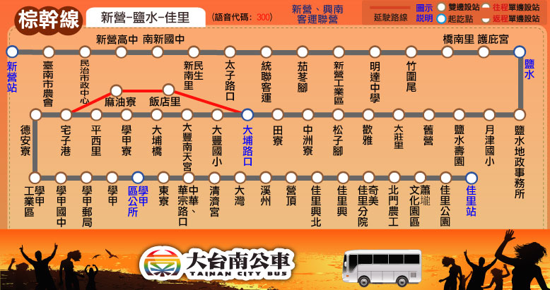

路線圖
路線資訊
票價表
時刻表
轉乘資訊

大台南公車 ─ 棕幹線 路線資訊
Tainan Bus brown Line, Route Information
起訖點
新營 － 佳里
營運公司
新營客運、興南客運
首／末班車發車時刻
往 佳里：06:05／20:05
往 新營：06:05／20:05
班距
固定班次 尖30離30~60
收費方式
里程計費
公車動態資訊
票價表
Ticket Fare
全票
半票
投現
-
-
電子票證
-
-
時刻表
Bus schedule
大台南公車－棕幹線 主要轉乘點資訊
Tainan bus Brown line, Transfer information
新營
台鐵新營站
棕幹線
黃幹線